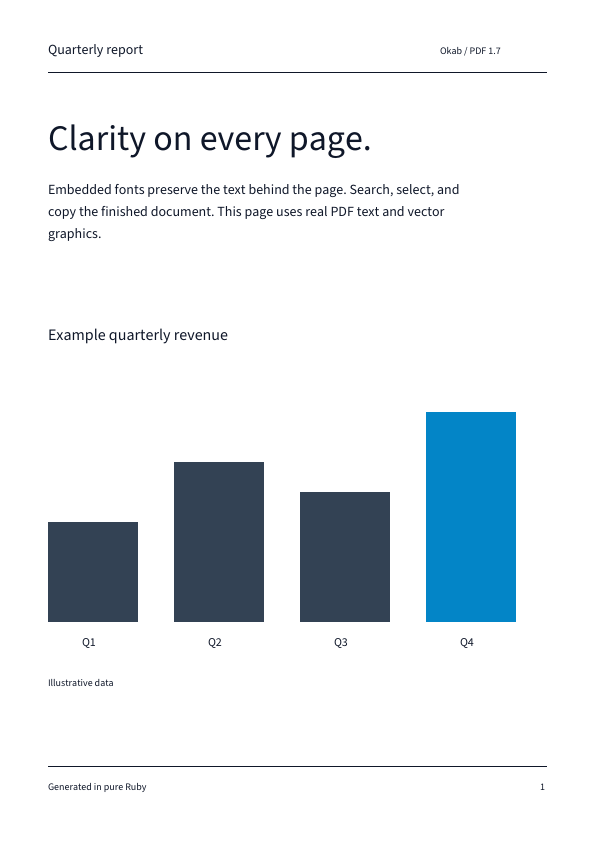

Searchable by design
Embed TrueType and supported CFF1 font subsets with ToUnicode mappings, including Japanese text when the font has the glyphs.
PDF generation for Ruby
Create precise documents with embedded fonts. Text stays searchable and copyable, and the same input produces the same PDF.

Build reports, exports, and print-ready pages without turning text into a picture.
Embed TrueType and supported CFF1 font subsets with ToUnicode mappings, including Japanese text when the font has the glyphs.
Place text and images alongside vector paths, clipping, links, and document outlines.
Generate deterministic PDF 1.7 files without timestamps changing the result.
Okab requires Ruby 3.2 or newer. Supply a font containing the glyphs you want to render.
gem install okabrequire "okab"
font = Okab::Font.load("report.ttf")
document = Okab::Document.new(title: "Report")
page = document.page(width: 595, height: 842)
page.text("Report", x: 48, y: 790, font: font, size: 24)
document.write("report.pdf")Coordinates use PDF points and a lower-left origin. Follow the getting started guide for your first document.
Examples and format notes for each part of your document.
Choose fonts, wrap paragraphs, add pages, and connect them with links and outlines.
Draw paths, clip artwork, apply transforms and opacity, and embed PNG or JPEG images.
Export an existing display list while preserving paths and searchable shaped glyphs.
Check supported formats and limits or see how to contribute.